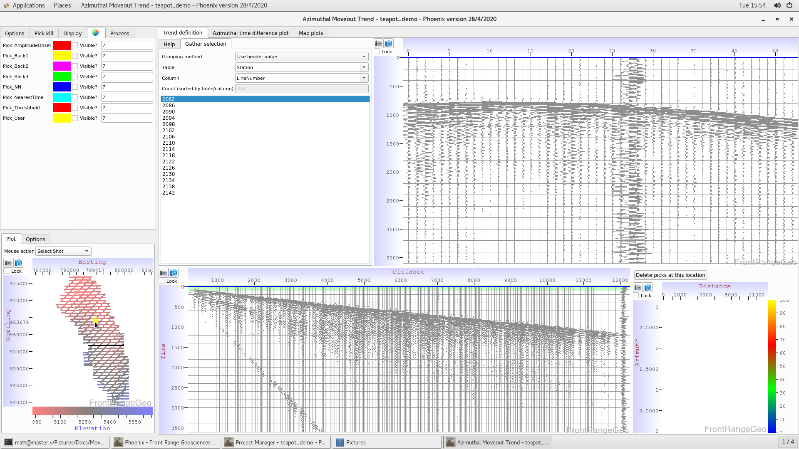

Many users will be familiar with linear moveouts. A linear moveout is a function of a single variable, a user-defined velocity, \(v\). This velocty is used to shift the seismic data by a time, \(t\), according to
\[ t = \frac{d}{v} \]
for each trace, where \(d\) is the distance between shot and receiver.
Linear moveouts are a coarse approximation since they use a single average velocity for all distances and angles. To better flatten out seismic data, we use a moveout trend, which records user “picks” as a function of both offset (and, optionally, azimuth). We interpolate the user defined shift values to create an arbitrarily varying shift which is a function of both offset and azimuth.
Users access the moveout trend windows from the Merge Manager. From the Merge Manager, navigate to the “Windows” tab at the top, and choose “Open moveout trend display - azimuth version”.
Once inside the moveout trend display, click on the basemap to pull up some seismic data.

The list on the left shows the lines in that shot. The top-right display shows the seismic data from that line. The bottom-left plot shows seismic data from that shot sorted by offset. The bottom-right plot shows user picks as a funciton of distance and azimuth.
Click on various lines in the shot-gather, and then click on first breaks in the top-right seismic display (hint: zoom in on first breaks by dragging the time axis in the seismic display). After you click on a first arrival, you’ll see the seismic data shift, showing you how the moveout trend is interpolating your picks to other offsets and azimuths.
The image above shows how to drag on the time axis to zoom in. Click anywhere on the time axis to zoom back out.
The next two images show the seismic data before and after a user has clicked on a first arrival.
Users can make multiple choices on each line if needed at various offsets and azimuths. Users should repeat this process at various locations on the basemap. The more user choices, the better the moveout trend will flatten the seismic data.